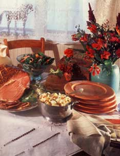
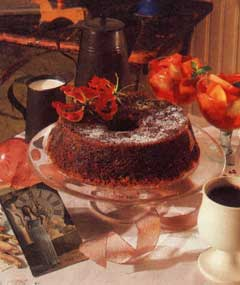

Even the most well-bred person may be subject to a fit of bad behavior at holiday parties.
One may suffer from an overdose, not necessarily of alcohol, but of frankness, cuddliness, reminiscences or other enemies of the social structure."
- Miss Manners
ANY CELEBRATION OF NEW YEAR'S Day attracts a mixed crowd.
With another year irretrievably gone, some guests are sunk in a wholly satisfying depression. They've just inventoried the past 12 months and found opportunities lost, things undone: roads untraveled, pounds unshed, books unwritten, children unreformed. Ten minutes along these lines, and they're ready for strong drink and chocolate.
A second faction is in the spine-stiffening grip of New Year's resolutions. No more smoking, drinking, feasting, debauching. This year they're going to get it right: Spartan self-denial, meteoric accomplishment, impeccable nutrition. And they're starting now.
A third group arrives mellow. They've come to rueful terms with life-probably the night before-and they expect this year to resemble the last: a mixture of success and failure, gain and loss. Buoyant with good cheer and fellow feeling, they're ready to celebrate a new beginning, another chance.
Given such a diversity of guests, it's a challenge to see to it that everyone has a good time. Happily, there are precedents. Across the centuries, humanity has celebrated this oldest and most universal of festivals-the renewal of time-with the same three themes: loss, resolution and joy.
Beginnings-whether of life, love or disaster-are difficult to pinpoint. At various times and places, the start of a new year has been assigned to harvesttime, the winter solstice (December 21), the summer solstice (June 21), the autumnal equinox (September 21) and the vernal equinox (March 21).
The Romans were the first to designate January 1 as New Year's Day. Traditionally, their year had begun with the vernal equinox. But in 153 B.C., the newly elected consuls decided that, since they would take office on January 1, a new cycle actually began then. Thus did an agricultural and seasonal festival become a civil celebration (an early instance of the federal government rearranging holidays to suit itself ). Europeans maintained their springtime observances until 1582, when Pope Gregory XIII reinstituted the first of January, despite its pre-Christian connotations. Catholic Europe followed immediately; Protestant countries took a few hundred years to come around.
There have always been New Year's demons to exorcise. Ancient cultures were convinced that as the old year weakened and died, evil spirits grew stronger and more dangerous. For safety's sake, the old year had to be hastened along and the demons driven off: Noise helped: shouts, drums, cymbals, gongs, whistles and, later, church bells, gunpowder and firecrackers. So did fire. On the last day of the year, fires were extinguished and then rekindled the next morning from a new, holy flame. The Creek Indians simply burned everything-clothes, furniture, uneaten corn from the previous year-and started over.
It's always seemed a perfect time to settle old scores. In any number of cultures, all outstanding debts had to be paid and all borrowed items returned on the last day of the year. The Iroquois cleaned their slates more dramatically. At year's end, men and women disguised themselves and proceeded to run amok through the village, invading wigwams, smashing whatever came to hand; throwing ice water, dirt and hot ashes on anyone who had offended them during the last 12 months. It was generally assumed that people were out of their senses during this time and thus not responsible for their actions. The general lunacy was followed by a general confession of sins, no doubt appropriate.
Sensible people have always resolved to make the next year better. An old and tenacious belief is that the first day sets the pattern for the next 364 and thus had better go well. On this one day, the Romans suspended all litigation and settled out of court. The Germans feasted as hugely, and dressed as richly, as possible, in order to give the appearance of people upon whom good fortune was about to descend. Americans were careful. In prudent households, new calendars were not hung until sunup on January 1. No clothes were washed, lest a year of hard work follow. Visitors were invited, for a great many brought great good fortune-unless the first happened to be a woman, and then a year of bad luck followed hard upon her heels. For some reason, it was lucky to bor row salt. (Of course, a considerate woman sent husband or son for it, especially early in the day.)
Traditionally, joy in the year's rebirth has brought gifts, visitors and food. The giftgiving tradition began with exchanges of good luck tokens: boughs of sacred trees (Romans and Druids); eggs, the symbols of fertility (Persians); gloves or pins-or, in their stead, "glove money" or "pin money" (British). In America, the English colonists continued to exchange presents on New Year's Day until, under Dutch and German influence, Christmas became the great giftgiving occasion.
Paying visits is perhaps the oldest and best established New Year's custom. Romans, Europeans, Americans-all have celebrated the new year by renewing ties and settling differences with family and friends. It seems appropriate. When embarking upon an unpredictable and possibly dangerous journey, one should gather one's fellow travelers about, for a mutual "bon voyage."
Of course, they all have to be fed. And if the feast is to be consistent with 40 centuries of tradition, it will allow the dejected to chase their demons, the newly perfect to sustain their illusions and the jubilant to express their joy. Quite a strain on hospitality.
Modern technology helps. In the great New Year's tradition of bombast and fireworks, television offers 12 hours of parades and football: the perfect staging for an open house.
Drop by, one can say to a dozen or so friends and relatives, anytime after 1:00.
We'll have a little desultory conversation about the passage of time and the meaning of life. We'll watch some television, compare the atrocities of parade commentators and quarterbacks. We'll drink a little fresh orange juice-either straight and pure, if that's the way we're feeling, or mixed half-and-half with champagne, if we need a little comfort. Later, we'll wander over to the buffet table. Football, friends, food-sample at will.
The accompanying menu allows guests to forage according to their moods. The seasonally depressed can head straight for the glazed ham, potato salad and apple cake. The resolute can dine lean and mean on salmon mousse, spinach salad and fruit.
And those just happy to be alive? They'll take care of themselves. They'll eat anything they like.
1 country-curedham
3 1/4 cups apple cider, divided
1/2 cup maple syrup
Whole cloves
Soak ham overnight in cold water. The next day, scrub ham with vegetable brush, and rinse.
Put ham and 3 cups cider in large pot, and add water to cover. Bring to a boil, reduce to simmer, and cook 15 minutes per pound. After ham has cooled in its cooking water, cut off heavy skin.
Preheat oven to 325°F. Place ham in roasting pan, and baste with a mixture of 1/2 cup maple syrup and 1/4 cup cider. Bake 1 hour, brushing frequently with the syrup mixture. Remove ham from oven, score it diagonally with a knife in two directions, stud with cloves, brush again with syrup, and return to the oven for another 20 minutes.
5 pounds potatoes
4 hardcooked eggs, chopped
1/2 cup finely chopped bacon
1 large onion, finely chopped
3 tablespoons flour
1 1/2 teaspoons salt
2 tablespoons sugar
1/2 teaspoon fresh black pepper
1 cup cider vinegar
1/2 cup water
1 teaspoon celery seed
1/4 cup chopped fresh parsley
Cook potatoes in boiling water until tender but firm. Drain, peel, and cut up into large bowl. Add eggs.
Saute bacon in a heavy skillet until crisp. Add onion; saute 1 minute. Remove bacon and onions with slotted spoon, and add to potatoes. Stir flour, salt, sugar and pepper into bacon drippings; cook, stirring constantly, for a minute or two. Add vinegar and water, and cook, stirring frequently, 10 minutes.
Pour enough dressing over potatoes to moisten them thoroughly; discard any excess. Sprinkle salad with celery seed and parsley, and toss until well mixed. Keep salad warm. Serves 10-12.
4 cups peeled, finely diced apples
1 cup granulated sugar
1 cup brown sugar
1 cup vegetable oil
1 cup chopped nuts
2 eggs, lightly beaten
2 teaspoons vanilla
2 cups whole-wheat flour
2 teaspoons baking soda
2 teaspoons cinnamon
1/2 teaspoon salt
Grease and flour a large tube pan, and preheat oven to 350°F. Stir together first 7 ingredients. Combine flour, soda, cinnamon and salt, mix well, and add to apple mixture. Pour batter into pan and bake 1 hour. Allow to cool before serving.
2 envelopes (2 tablespoons)unflavored gelatin
1 1/4 cups cold water
2 16-ounce cans salmon, drained, skin re moved, bones crushed
2 cups plain low-fat yogurt
2 tablespoons mayonnaise (optional)
2 tablespoons fresh snipped dill or 1 teaspoon dried dillweed
2 tablespoons grated onion
2 tablespoons lemon juice
2 tablespoons minced fresh parsley
1 teaspoon snipped fresh chives (optional)
Several dashes cayenne
White or black pepper to taste
Sprinkle gelatin on cold water in small saucepan. Let stand 5 minutes to soften. Then heat water until gelatin melts.
While gelatin softens, puree 1 can salmon with 1 cup yogurt and 1 tablespoon mayonnaise in blender. Transfer puree to large bowl, and repeat the process with remaining salmon, yogurt and mayonnaise. Combine two purees.
When gelatin has completely dissolved, pour it into the salmon puree, add remaining ingredients, and combine thoroughly. Place bowl in refrigerator until mousse is partially set (mixture should form a heap when dropped from a spoon). Lightly grease a 6-cup mold with vegetableoil spray. Pour in the partly gelled mixture. Chill until firm, about 3 hours.
At serving time, unmold mousse by inverting it onto a platter. It should not be necessary to dip mold in hot water, but if it does not unmold, hold in a bowl of lukewarm water for 10 seconds.
Since this recipe serves 4, you'll need to increase it to accommodate the number of guests.
Dressing:
1/2 cup grapefruit juice
2 tablespoons prepared mustard
1/4 cup olive oil
1/4 cup honey
2 tablespoons poppy seeds
2 tablespoons grated onion
1/4 teaspoon salt, if desired
Freshly ground black pepper to taste
Salad:
4 cupspacked spinach leaves, well washed
1 cup orange sections
1 cup grapefruit sections
1/2 cup red onion rings
In bowl, combine all dressing ingredients. Chill. At serving time, place salad ingredients in salad bowl, and toss with enough chilled dressing to moisten.
10 cups prepared fruit-fresh, frozen or canned in its own juice-cut into bite-size pieces
1 12-ounce bottle grenadine*
Place fruit in serving bowl. Add enough grenadine to moisten fruit thoroughly. Chill. Serves 10-15.
* Grenadine is usually found in the mixed-drink sections of grocery stores.
|
 Whether seasonally depressed or newly resolute, guests can enjoy dessert |
 |
|